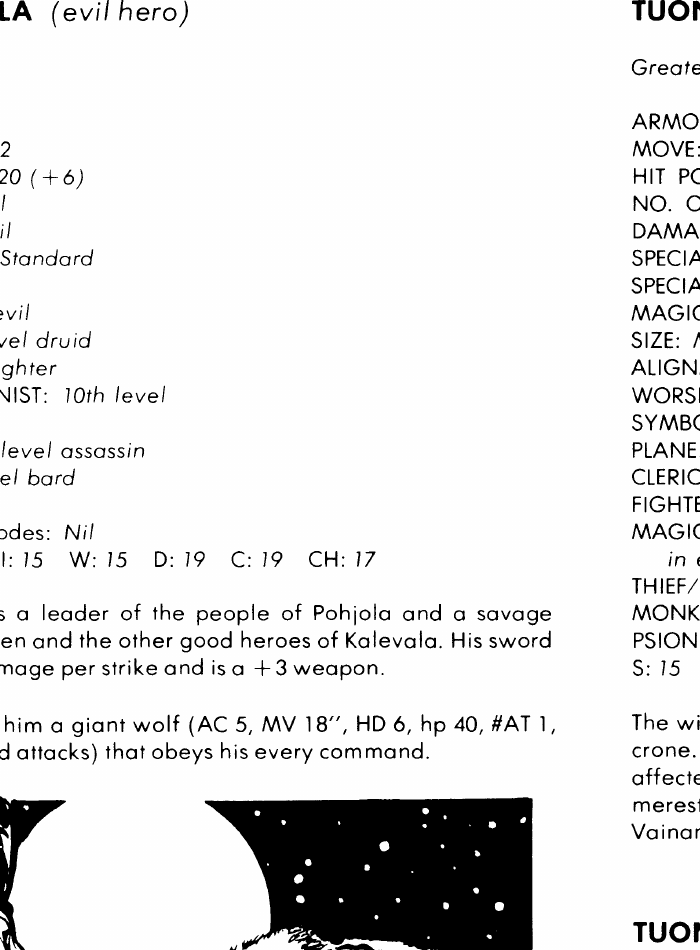

乌科、温塔莫 与空中少女 · Ukko、Untamo 与空中少女
Ukko 是卡勒瓦拉至高神，守序善良强大神，AC −2，生命值 400，魔法抗性 85%，位于双天堂；20 级牧师、20 级圣武士、25 级魔法师、15 级吟游诗人。火焰剑造成 3–30 点伤害并有死亡术效果，豁免修正 −6；他掌管天空、空气、天气与生命，通常只在世界将被邪恶毁灭时亲自介入。
Untamo 是中立睡眠与梦境弱等神，AC 0，生命值 319，魔法抗性 25%，位于协调对立。十三小时未睡的生物无法伤害他；不通过法术豁免者会被他的棍击立刻催眠。空中少女 Air Maiden 是 Ukko 的战士，AC 5，85 生命值，移动 48 英寸，持 +3 霜刃；她一次只出现一人，任务完成或死亡后会消失并由另一人接替。
